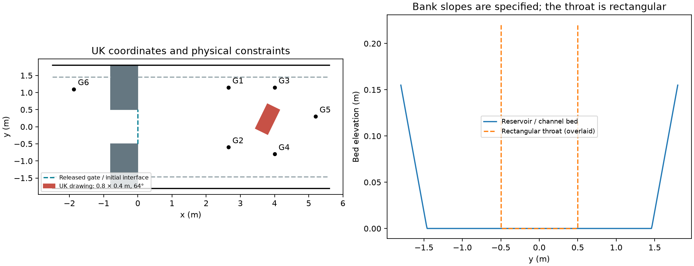
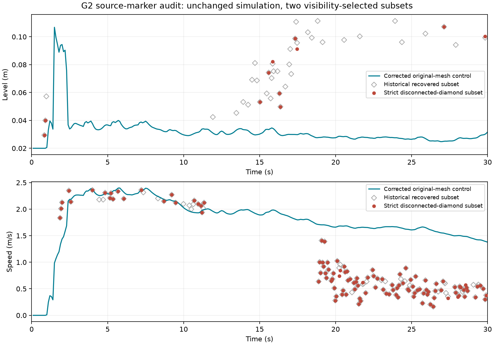

Test 6A: source geometry and observation audit
26 October 2026 · Source reconciliation; no new hydraulic simulation
The executed drawing geometry, gauge locations and output cadence agree with the UK specification. A stricter independent marker extraction still shows the missing G2 depth rise and slowdown. No verified source error establishes a geometry, gate or initial-condition correction.
What the supplied sources actually specify
| Item | Controlling source | Finding | Disposition |
|---|
| Gauge coordinates | UK Test6Aoutput.csv and drawing | All six match exactly; G2 (2.65, −0.60) m | Retain |
| Throat / gate bed | Drawing section BB and explicit release x=0 | 1.0 m rectangular width; bed 0; open internal interface | No missing sill shown |
| Channel / reservoir | Drawing sections AA and CC | 3.6 m total width; 0.155 m rise over each 0.34 m bank | Sloping banks are specified |
| Building | UK drawing inset and b1 dimensions | 0.8 × 0.4 m, 64° from x; b1 (3.44, −0.05) m | Retain UK geometry |
| Initial condition | Test specification §3 and report Appendix A.6 | Depth 0.4 m upstream / 0.02 m downstream | Main report wording differs; retain explicit specification |
| Output | Test specification §5 | 0.1 s reporting; 30 s diagnostic retained separately from 120 s qualification | No output rescaling or clock fitting |
| Gate opening | UK initial-value problem | Instantaneous release; no measured motion schedule supplied | Do not invent a finite opening time |
| Earlier IMPACT version | Search-indexed transcription only | b1 x=3.40 m; downstream depth 0.01 m | Provisional conflict, original needed |
The drawing is rectangular in plan. Its reservoir and downstream cross-sections include shallow sloping banks; the narrow throat has vertical sides and a flat bed. The 64° angle is between the long building side and the x direction, as drawn in the inset. The source audit checks these segments against the executed input independently of the mesh-generator function.

DEM threshold areas are not survey dimensions: the blocked-pixel area near the building varies from 0.415 m² at elevation 0.02 m to 0.405 m² at 0.4 m and 0.255 m² near its 10 m artificial top. The dimensioned building area is 0.32 m². This threshold dependence prevents treating one raster mask as a uniquely defined physical footprint. The existing source-drawing geometry is retained.
Conflicting versions and unresolved metadata
The UK test specification and report appendix explicitly prescribe initial depths of 0.4 and 0.02 m. The main report introduction uses the term water level. The prior uniform-level diagnostic did not resolve G2; this source audit does not repeat or silently substitute it.
A search-indexed transcription of the earlier author-written IMPACT specification lists b1 at x=3.40 m and downstream depth 0.01 m. The UK drawing and specification give 3.44 m and 0.02 m. This is a provisional source-version discrepancy: direct access to the mirror required robot verification, the original IMPACT site was unavailable, and no authenticated original was obtained. It is insufficient evidence to change the UK benchmark or assert which initialization produced the published measurements. See the indexed IMPACT document and retrieval limitations.
The UK files provide no finite gate-opening history. The implemented release at x=0, internal hydraulic connection and zero gate-bed elevation match the specified initial-value problem. No missing sill or elevation offset was found. The 2007 UCL institutional publication record identifies both ADV and image-based velocity measurements, but its abstract does not establish the measurement operator for each UK curve. Full original records remain necessary.
Correction to the extraction description
The historical extractor searches a 5×5 diamond-shaped magenta pixel pattern and excludes the legend. It does not ensure that the detected shape is disconnected from neighboring magenta graphics. Earlier wording that all retained markers were isolated and all overlapping or ambiguous cases were excluded was too strong. Attached patterns can be real touching measurement markers or connections to the same-colour continuous curve; connectivity alone cannot decide which.
The new implementation flood-fills eight-connected magenta components and accepts only an entire 13-pixel diamond with 5×5 bounds, an integer centre and Manhattan radius two. It does not call the original sliding-template detector. Four synthetic tests check isolated acceptance, attached-line rejection, diagonal-contact rejection and wrong-shape rejection. Plot bounds and legend exclusion are unchanged. Every historical CSV time and value also reproduces independently from its recorded pixel coordinates within 10⁻¹², ruling out a conversion inconsistency in those records.
| Gauge / quantity | Historical markers | Strict markers | Historical bins | Strict bins |
|---|
| G2 / level_m | 56 | 15 | 39 | 11 |
| G4 / level_m | 72 | 17 | 41 | 9 |
| G5 / level_m | 175 | 30 | 108 | 24 |
| G6 / level_m | 0 | 0 | 0 | 0 |
| G2 / speed_mps | 171 | 138 | 141 | 117 |
| G4 / speed_mps | 137 | 107 | 117 | 94 |
At G2 the stricter rule retains 15 level markers, binned into 11 times, and 138 speed markers, binned into 117 times. These remain far from the unchanged control after the secondary transition. At about 27.13 s a disconnected level marker is 0.1072 m; at about 29.84 s another is 0.1003 m, while the control remains near 0.03 m. Disconnected speed markers likewise retain the late low-velocity cluster. This supports the existence of the discrepancy, not complete accuracy of the recovered experiment.

Strict-subset errors and their limits
| Gauge / quantity | Samples | Covered intervals (s) | RMSE | Bias |
|---|
| G2 / level_m | 11 | 2.513 | 0.044398 | -0.040355 |
| G2 / speed_mps | 117 | 15.209 | 0.913243 | 0.737727 |
| G4 / level_m | 9 | 0.967 | 0.018815 | 0.010763 |
| G4 / speed_mps | 94 | 20.365 | 0.270979 | -0.093616 |
| G5 / level_m | 24 | 4.834 | 0.026059 | -0.001281 |
Units are metres for levels and metres per second for speeds. These errors use the same interpolation and one-second gap policy as previous assessments. The stricter G2 level series covers only 2.51 s of connected observation intervals; its isolated late points have zero interval weight but remain visible in the plot and maximum residual. G2 speed covers 15.21 s. Changing subsets changes coverage and weights: lower or higher RMSE here is not solver improvement or deterioration.
The independent algorithm and visual checks were performed by the same assistant. They are not a second-person review, do not recover hidden or overlapping measurements, and do not resolve instrument uncertainty. The historical reference files and metrics remain byte-identical; the strict subset is an audit artifact, not a promoted validation reference. No competing model curves are reproduced.
Practical next step
Keep the UK drawing geometry and FLAT/MEAN control. Before another source-based variant, obtain the authoritative building-corner table and applicable experiment version, original G2/G6 level and G2 velocity records with instrument metadata, and the gate-opening/initial-water-level record. This audit does not justify narrowing the throat, rotating or enlarging the building, adding a gate sill, changing downstream depth to 0.01 m, or tuning wall friction. Further solver work should be driven by an independent diagnostic that isolates a specific numerical deficiency.
Evidence
Controlling sources: official UK model archive (Test 6 specification pp. 1–3 and gauge CSV); SC120002/R §4.7.1 and Appendix A.6. All local source hashes are retained; original artwork stays local.
Complete audit · Source decisions and limitations · Every historical marker’s connectivity · Strict marker coordinates · Strict recovered observations · Observation provenance · Strict-subset metrics · Four detector tests · Audit reproducer · Detector tests · Report builder
Run the scripts in their original benchmark repository directory, tests/verification/g2-source-reconciliation-2026-10-26, with the existing Python environment, local PDFs and completed reconstruction control. No engine binary is executed. The report copies are source archives and depend on those documented local inputs.